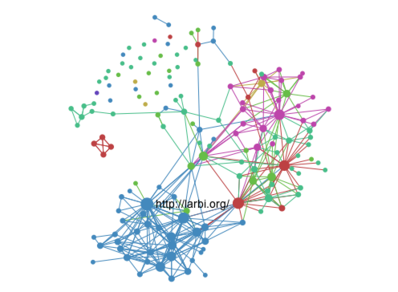

The htmlwidgets package provides a framework for creating R bindings to JavaScript libraries. HTML Widgets can be:
By following a small set of easy-to-follow conventions, it is possible to create HTML widgets with very little code. All widgets include the following components:
Dependencies. These are the JavaScript and CSS assets used by the widget (e.g. the library you are creating a wrapper for).
R binding. This is the function that end users will call to provide input data to the widget as well as specify various options for how the widget should render. This also includes some short boilerplate functions required to use the widget within Shiny applications.
JavaScript binding. This is the JavaScript code that glues everything together, passing the data and options gathered in the R binding to the underlying JavaScript library.
HTML widgets are always hosted within an R package and should include all of the source code for their dependencies. This is to ensure that code which depends on widgets is fully reproducible (i.e. doesn’t require an internet connection or the ongoing availability of an internet service to run).
To start with we’ll walk through the creation of a simple widget that wraps the sigma.js graph visualization library. When we’re done we’ll be able to use it to display interactive visualizations of GEXF (Graph Exchange XML Format) data files. For example:
library(sigma)
data <- system.file("examples/ediaspora.gexf.xml", package = "sigma")
sigma(data)
Note that the above is just an image of the visualization so it’s not interactive. You can play with the interactive version by following the steps in the demo section below.
There is remarkably little code required to create this binding. Below we’ll go through all of the components step-by-step. Then we’ll describe how you can create your own widgets (including automatically generating basic scaffolding for all of the core components).
Let’s assume that our widget is named sigma and is located within an R package of the same name. Our JavaScript binding source code file is named sigma.js. Since our widget will read GEXF data files we’ll also need to include both the base sigma.min.js library as well as its GEXF plugin. Here are the files that we’ll add to the package:
R/
| sigma.R
inst/
|-- htmlwidgets/
| |-- sigma.js
| |-- sigma.yaml
| |-- lib/
| | |-- sigma-1.0.3/
| | | |-- sigma.min.js
| | | |-- plugins/
| | | | |-- sigma.parsers.gexf.min.jsNote the convention that the JavaScript, YAML, and other dependencies are all contained within the inst/htmlwidgets directory (which will subsequently be installed into a package sub-directory named htmlwidgets).
Dependencies are the JavaScript and CSS assets used by a widget. Dependencies are included within the inst/htmlwidgets/lib directory. Dependencies are specified using a YAML configuration file which uses the name of the widget as its base file name. Here’s what our sigma.yaml file looks like:
dependencies:
- name: sigma
version: 1.0.3
src: htmlwidgets/lib/sigma-1.0.3
script:
- sigma.min.js
- plugins/sigma.parsers.gexf.min.jsThe dependency src specification refers to the directory that contains the library and script refers to specific JavaScript files. If your library contains multiple JavaScript files specify each one on a line beginning with - as shown here. You can also add stylesheet entries and even meta or head entries. Multiple dependencies may be specified in one YAML file. See the documentation on the htmlDependency function in the htmltools package for additional details.
We need to provide users with an R function that invokes our widget. Typically this function will accept input data as well as various options that control the widget’s display. Here’s the R function for sigma:
#' @import htmlwidgets
#' @export
sigma <- function(gexf, drawEdges = TRUE, drawNodes = TRUE,
width = NULL, height = NULL) {
# read the gexf file
data <- paste(readLines(gexf), collapse="\n")
# create a list that contains the settings
settings <- list(
drawEdges = drawEdges,
drawNodes = drawNodes
)
# pass the data and settings using 'x'
x <- list(
data = data,
settings = settings
)
# create the widget
htmlwidgets::createWidget("sigma", x, width = width, height = height)
}The function takes two classes of input: the GEXF data file to render and some additional settings which control how it is rendered. This input is collected into a list named x which is then passed on to the htmlwidgets::createWidget function. This x variable will subsequently be made available to the JavaScript binding for sigma (this is described below). Any width or height parameter specified is also forwarded to the widget (widgets size themselves automatically by default so typically don’t require an explicit width or height).
We want our sigma widget to also work in Shiny applications, so we add the following boilerplate Shiny output and render functions (these are always the same for all widgets):
#' @export
sigmaOutput <- function(outputId, width = "100%", height = "400px") {
shinyWidgetOutput(outputId, "sigma", width, height, package = "sigma")
}
#' @export
renderSigma <- function(expr, env = parent.frame(), quoted = FALSE) {
if (!quoted) { expr <- substitute(expr) } # force quoted
shinyRenderWidget(expr, sigmaOutput, env, quoted = TRUE)
}The third piece in the puzzle is the JavaScript required to activate the widget. By convention we’ll define our JavaScript binding in the file inst/htmlwidgets/sigma.js. Here is the full source code of the binding:
HTMLWidgets.widget({
name: "sigma",
type: "output",
initialize: function(el, width, height) {
// create our sigma object and bind it to the element
var sig = new sigma(el.id);
// return it as part of our instance data
return {
sig: sig
};
},
renderValue: function(el, x, instance) {
// parse gexf data
var parser = new DOMParser();
var data = parser.parseFromString(x.data, "application/xml");
// apply settings
for (var name in x.settings)
instance.sig.settings(name, x.settings[name]);
// update the sigma instance
sigma.parsers.gexf(
data, // parsed gexf data
instance.sig, // sigma instance we created in initialize
function() {
// need to call refresh to reflect new settings and data
instance.sig.refresh();
}
);
},
resize: function(el, width, height, instance) {
// forward resize on to sigma renderers
for (var name in instance.sig.renderers)
instance.sig.renderers[name].resize(width, height);
}
});We provide a name and type for the widget and then implement three functions:
The initialize function creates and/or attaches to DOM elements as required and returns on object containing the widget’s instance data. In this case we create a new sigma element and pass it the id of the DOM element that hosts the widget on the page. We’re going to need access to the sigma object later (to update it’s data and settings) so we return it as the sig member of the widgets instance data.
The renderValue function actually pours our dynamic data and settings into the widget. Everything required to do the job is passed as a parameter to renderValue: the x parameter contains the widget data and settings and the instance parameter contains a reference to the sigma object we need to manipulate. We parse and update the GEXF data, apply the settings to the sigma object, and finally call refresh to reflect the new values on-screen.
The resize function is called whenever the element containing the widget is resized. In this case we forward the sizing information on to each of the underlying sigma renderers.
All JavaScript libraries handle initialization, binding to DOM elements, dynamically updating data, and resizing slightly differently. Most of the work on the JavaScript side of creating widgets is mapping these three functions correctly onto the behavior of the underlying library.
Our widget is now complete! If you want to test drive it without reproducing all of the code locally you can install it from GitHub as follows:
devtools::install_github('jjallaire/sigma')Here’s the code to try it out with some sample data included with the package:
library(sigma)
sigma(system.file("examples/ediaspora.gexf.xml", package = "sigma"))If you execute this code in the R console you’ll see the widget displayed in the RStudio Viewer (or in an external browser if you aren’t running RStudio). If you include it within an R Markdown document the widget will be embedded into the document.
We can also use the widget in a Shiny application:
library(shiny)
library(sigma)
gexf <- system.file("examples/ediaspora.gexf.xml", package = "sigma")
ui = shinyUI(fluidPage(
checkboxInput("drawEdges", "Draw Edges", value = TRUE),
checkboxInput("drawNodes", "Draw Nodes", value = TRUE),
sigmaOutput('sigma')
))
server = function(input, output) {
output$sigma <- renderSigma(
sigma(gexf,
drawEdges = input$drawEdges,
drawNodes = input$drawNodes)
)
}
shinyApp(ui = ui, server = server)To implement a widget you need to create a new R package that in turn depends on the htmlwidgets package. You can install the package from CRAN as follows:
install.packages("htmlwidgets")While it’s not strictly required, the step-by-step instructions below for getting started also make use of the devtools package which you can also install from CRAN:
install.packages("devtools")To create a new widget you can call the scaffoldWidget function to generate the basic structure for your widget. This function will:
Create the .R, .js, and .yaml files required for your widget;
If provided, take a Bower package name and automatically download the JavaScript library (and its dependencies) and add the required entries to the .yaml file.
This method is highly recommended as it ensures that you get started with the right file structure. Here’s an example that assumes you want to create a widget named ‘mywidget’ in a new package of the same name:
devtools::create("mywidget") # create package using devtools
setwd("mywidget") # navigate to package dir
htmlwidgets::scaffoldWidget("mywidget") # create widget scaffolding
devtools::install() # install the package so we can try itThis creates a simple widget that takes a single text argument and displays that text within the widgets HTML element. You can try it like this:
library(mywidget)
mywidget("hello, world")This is the most minimal widget possible and doesn’t yet include a JavaScript library to interface to (note that scaffoldWidget can optionally include JavaScript library dependencies via the bowerPkg argument). Before getting started with development you should review the introductory example above to make sure you understand the various components and also review the additional articles and examples linked to in the next section.
There are additional articles that cover more advanced ground:
HTML Widget Sizing explains custom sizing policies and when you might need to use them and describes implementing a resize method within JavaScript bindings.
HTML Widgets: Advanced Topics describes framework features that support per-widget instance data, data transformations (e.g. converting a data frame into a d3 dataset), and providing widget options that are live JavaScript objects (e.g. function definitions).
The Sizing article is particularly important as most JavaScript libraries require some additional interaction to keep their size synchronized with their containing element.
Studying the code of other packages is a great way to learn more about creating widgets:
The networkD3 package illustrates creating a widget on top of D3, using a custom sizing policy for a larger widget, and providing multiple widgets from a single package.
The dygraphs package illustrates using widget instance data, handling dynamic re-sizing, and using magrittr to decompose a large and flat JavaScript API into a more modular and pipeable R API.
The sparkline package illustrates providing a custom HTML generation function (since sparklines must be housed in <span> rather than <div> elements).
If you have questions about developing widgets or run into problems during development please don’t hesitate to post an issue on the project’s GitHub repository.